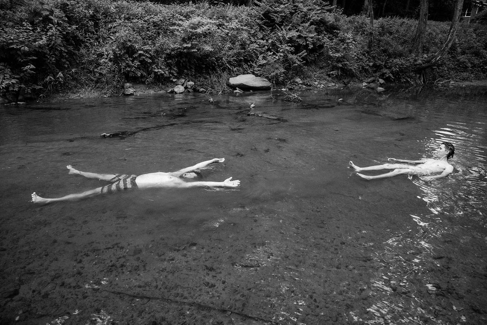

A grandfather, a sauna, and a lake in northern Ontario.
Stuart's grandfather was born in Austria and eventually found himself on the lakes of northern Ontario. His neighbours were Finnish and Swedish — Scandinavians who had carried their sauna culture across the Atlantic and shared it openly with the people around them.
He learned. He built his own sauna.
Stuart spent almost every summer at that lake, and the sauna was simply part of the rhythm of life. At the end of a long day working in the bush or out on the water, you went to the sauna. You sat in the heat. You talked, or you didn't. You stepped out into the crisp Superior air, jumped into the cold dark water, and came back in again.
It was simple, physical and honest, and it stayed with him long after the summers ended. The sauna was not a product. It was not a spa amenity or a wellness trend. It was a place where the body was cared for and the pace of everything slowed down.

What “Bushlot” means.
A bushlot is a Canadian term for a wooded piece of land — the kind of rough, tree-covered lot where a family might clear a path to the water, put up a hunting cabin, and leave a sauna in the trees for anyone who wants it.
It speaks to something unpretentious and real. Not a spa. Not a resort. Your lot, your ritual, something you made with your hands on a piece of ground you call yours.
The name felt right.